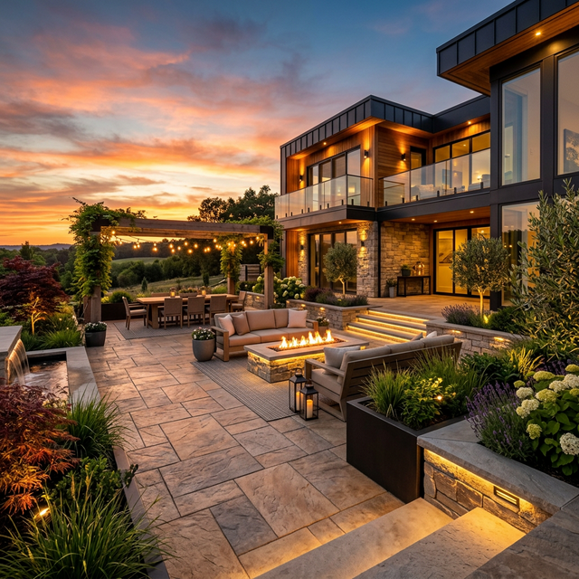
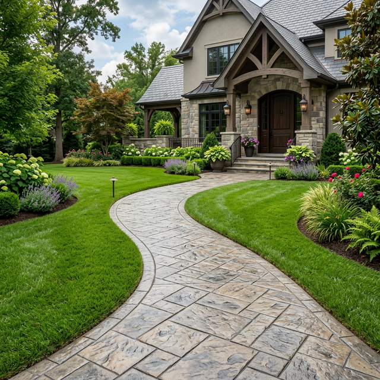
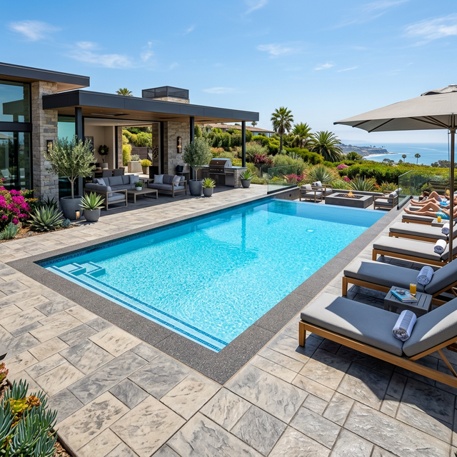
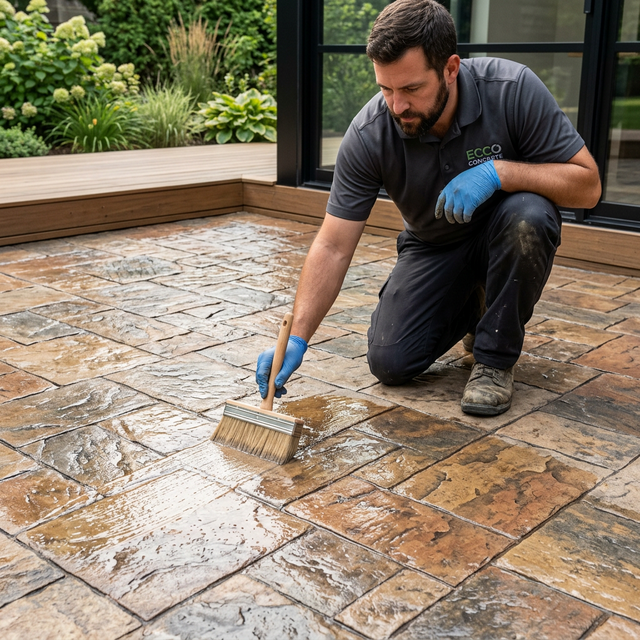

The "Granite Town" on the Souhegan River — premium decorative concrete for Milford Oval, Ponemah & Wilton Road homeowners since 1985.
Milford is the Granite Town — a charming Hillsborough County community of about 16,000 residents nestled along the Souhegan River. With its beautiful Milford Oval, vibrant downtown, and the historic granite quarry heritage, Milford combines small-town New England charm with a creative, community-driven spirit.
We've completed projects throughout Milford — from the historic homes surrounding the Milford Oval and Union Street to the neighborhoods along South Street, Ponemah Hill Road, Mason Road, and Wilton Road. We also serve the newer developments near Armory Road and Osgood Road.
Milford's terrain features Souhegan River valley alluvium, granite bedrock (the town's namesake!), and sandy loam on hillsides. The granite ledge that made Milford famous also requires specialized expertise — we work with it rather than against it, incorporating exposed ledge as design accents.
Schedule Your Free On-Site Estimate
We've completed stamped concrete projects throughout Milford, NH 03055.
Also serving neighboring Amherst, Brookline, and Mont Vernon
See what we've done for your neighbors in the Granite Town.
Installed a 500 sq ft cobblestone patio with natural granite accent borders for a Union Street home near the Oval. The granite inlays honor Milford's quarry heritage and the warm pewter tones complement the home's Federal-period architecture.

Designed a flagstone walkway connecting the main house to a river-view garden terrace on South Street. The irregular pattern and earth tones blend with the Souhegan River's natural corridor, creating a peaceful retreat.

Created a sandstone pool deck with panoramic views on Ponemah Hill Road. The warm golden surface and slip-resistant texture handle the hilltop's wind exposure while creating a private resort-like atmosphere above the valley.

A Mason Road homeowner had a massive granite ledge outcropping in the middle of their proposed patio area. Previous contractors had suggested blasting or breaking it — which would have been expensive and destructive. The homeowner wanted to preserve the ledge as part of the design, honoring Milford's granite heritage.
We designed a wraparound patio that embraces the granite outcrop as the centerpiece — a natural seat wall and focal point. The stamped concrete in aged fieldstone pattern meets the exposed granite at seamless transitions, and we carved planting pockets into the concrete for native ferns and moss. The ledge now serves as a natural fire pit backdrop and conversation starter. The homeowner calls it their "Milford monument" — a celebration of the town's granite roots.
Learn About Our ServicesFull-service decorative concrete for the Granite Town.
Milford's diverse properties — from Oval-area Federals to Ponemah Hill contemporaries — deserve patios that match their character. We specialize in granite-accented designs that honor the town's quarry heritage.
Learn MoreMilford's historic downtown and riverside properties benefit from walkways that blend with the town's character. Cobblestone, flagstone, and granite-border designs connect homes to gardens and river-view terraces.
Learn MoreMilford's hillside and valley lots are ideal for pools. Our slip-resistant decks handle granite ledge, river-valley clay, and sandy hillside soils with engineered solutions that last for decades.
Learn MoreDon't just take our word for it — hear from the Granite Town.
"The granite-ledge patio on Mason Road is our 'Milford monument.' Instead of blasting away the ledge, they made it the star of the design. Everyone who visits asks about it. Pure genius."
Mason Road, Milford, NH
"The cobblestone courtyard on Union Street near the Oval is perfect. The granite accent borders honor Milford's heritage beautifully. It looks like it's been there since the 1800s."
Union Street, Milford, NH
"The river-view garden walkway on South Street connects our house to the best sunset spot on the Souhegan. The earth tones blend with the riverbank perfectly. Couldn't be happier."
South Street, Milford, NH
Common questions from Milford homeowners.
Absolutely! Milford is the Granite Town — we integrate exposed ledge as dramatic design features rather than removing it. Our wraparound and incorporation techniques celebrate your property's natural granite beautifully.
Properties along the Souhegan have specific flood engineering needs. We use elevated sub-bases, perimeter drainage, and flood-resilient construction that handles seasonal high water events without damage.
Yes! We design period-appropriate patterns for Milford's Federal and Victorian homes near the Oval. Our cobblestone and granite-border designs honor the historic district's architectural character perfectly.
Cobblestone with granite borders and fieldstone in gray-pewter tones honor the town's heritage. Bluestone suits riverside properties. We bring samples for on-site comparison.
Most Milford patios take 3-5 days. Ledge-integration projects may add 1-2 days for custom fitting. We coordinate around Milford events and downtown parking to minimize disruption.
We don't just work in Milford — we're invested in the Granite Town:
Our headquarters is at 8 Chenell Drive, Concord, NH 03301 — about 35 minutes from Milford. We always come to you!
Approx. 35 minutes / 33 miles via Route 101A & I-93
We've completed projects near these favorite Milford spots:
Join Granite Town homeowners who trust Northeast Decorative Concrete. Free on-site estimates — no obligation.
About 35 minutes via Route 101A — or we'll come to you for a free on-site estimate.